00 / OPENING0 / 5
Arrive
Goal: Understand who needs help.
Input: Click “Begin wandering.”
Feedback: A closed flower stirs; a cloud glimmers.
Continue: Enter the first small glade.
A COZY ADVENTURE ABOUT WONDER
In a galaxy full of stars,
even the planets have dreams.
One little traveler. Five lost dreams.
A whole world waiting to wake up.
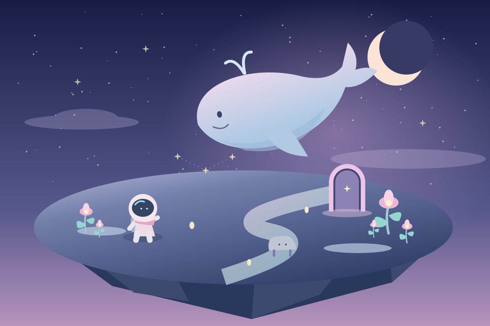
Proposal in progress. The concept and design plan are drafted. The case study still needs your play notes; inspiration-image credits need confirmation. These will be added in a later update.
View remaining items ↓Nova is a tiny space traveler who discovers a planet that has forgotten how to dream happily.
Its flowers are closed, its colors have faded, and its stars have stopped twinkling. But its dreams are leaking into the landscape: a cloud becomes a whale, a rock grows legs, and a little doorway opens into an impossible world.
Nova follows these wonderful changes and collects five lost dream fragments. Each discovery returns a little color and life. When the fifth fragment is found, the planet awakens—and its imaginary creatures stay.
Here, hallucination is a fictional, dreamlike change in what the world seems to be. Familiar things reveal impossible lives. The player learns that an unexpected perception can open a path to discovery. This is a magical story about a dreaming planet, rather than a clinical portrayal.
“The universe is even more wonderful
when you let your imagination wander.”
One action grows in meaning: first reveal a dream, then follow its clue, then use that clue inside a miniature world.
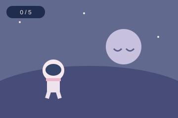
OPENING / ARRIVE
Nova lands beside closed flowers. A softly glowing cloud is the first invitation to explore.
Input: select “Begin wandering.” Feedback: Nova enters the glade and a cloud gains an outline.
These controls preview the proposed journey and tracker. The playable exploration game is planned for Week 2.
Goal: Understand who needs help.
Input: Click “Begin wandering.”
Feedback: A closed flower stirs; a cloud glimmers.
Continue: Enter the first small glade.
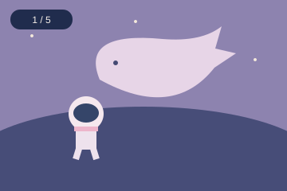
Goal: Discover the interaction.
Input: Click the outlined cloud, then its revealed fragment.
Feedback: A whale unfurls, a chime sounds, and nearby flowers open.
Continue: At 1 / 5, a path to the meadow lights up.
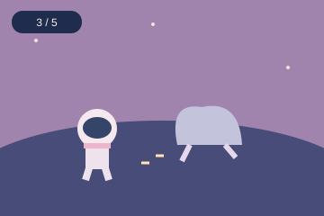
Goal: Read the world's clues.
Input: Follow and click a walking rock; inspect a flower that grows enormous.
Feedback: Each reveals a fragment. Footprints and pollen point onward.
Continue: At 3 / 5, a dancing star reveals a doorway.
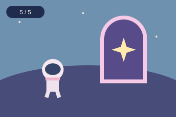
Goal: Use the familiar clue in a new place.
Input: Click the dancing star for fragment four; enter its portal and find the outlined star.
Feedback: The tiny world shimmers and yields fragment five.
Continue: Return automatically for the awakening.
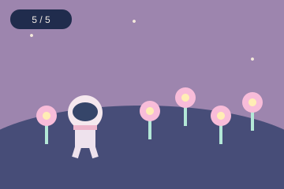
Goal: Enjoy the change you made.
Input: Choose “Keep wandering” or “Dream again.”
Feedback: Flowers bloom, colors warm, and the whale stays.
Continue: Explore freely or deliberately restart at 0 / 5.
Proposed game flow · stage gates keep progress clear while each area allows free exploration.
Surprises happen in the world while Nova explores; there is no mode-switching button. Each stage has a small set of authored events that can appear at varied times. Once an event is noticed, its fragment remains available.
Stars raining upward, a second moon, and an ocean-colored ground are optional ambient effects. They never hide a required clue or change the controls.
Sandspiel is a candidate for studying how a simple action can lead to discovery. It is not yet being presented as a game the student has played.
Open the browser game ↗VERIFIED CREATOR ACCOUNT
In Making Sandspiel (April 30, 2019), Bittker describes building the game in late 2018. He connects its play to experimentation and imagination, and explains his effort to keep touch interactions direct.
Contributor credit: Bittker also credits Pavel Dobryakov’s fluid simulation as a foundation he adapted. This is a specific contribution, not a claim that Dobryakov designed the whole game.
Not verified: A separate music or sound credit was not established from this source.
PROPOSED DESIGN INTERPRETATION
A repeatable input can produce a world worth exploring. Cosmic Daydreamer could apply this principle through clear object feedback, without reproducing Sandspiel’s simulation.
This is a proposed connection. Personal play notes are needed to decide whether the surprises actually feel inviting, confusing, or something else.
Research preparation is AI-assisted. Personal experience and creator intent are recorded separately below.
Play before reading more interpretations. Record what actually happens, including an unsuccessful experiment. These fields save in this browser when storage is available; export a copy before sharing.
Use observable details for the first two columns. The third is your interpretation. The numbered rows are blank evidence slots, not claims about gameplay.
| Event | Player action | Game response | Player understanding |
|---|
Notes stay on this device. Exported notes can be incorporated into the final proposal.
The first analysis connected simple actions with surprise. The student questioned whether surprise necessarily creates the feeling this game needs.
That distinction changes the design: unpredictability belongs in the appearance of a dream, while controls and progress stay dependable.
“In Sandspiel, simple actions can produce surprising changes, which could inspire your Dream Surprises.”
“whether surprise always feels relaxing could inspire my dream suprises because this game is intended to be full of wonder but yet still cozy.”
Surprise can create wonder, but it can also create pressure. Make transformations gentle, keep discovered fragments available, and let players revisit missed events.
Selected exchange from this conversation. The student’s wording is preserved; the AI response is condensed. The second gap below records the student’s follow-up selection. This is a preliminary design discussion, to be connected to firsthand case-study evidence after play.
GAP 01 / EMOTIONAL ASSUMPTION
Identified by the student: The initial analysis treats surprise as positive without asking whether it feels cozy. Test the distinction against a specific case-study moment.
Design response: Avoid sudden loud sounds, rushing, or disappearing rewards. Use a gentle visual cue before a transformation.
GAP 02 / PLAYER DIFFERENCES
Identified by the student: “It assumes every player enjoys the same amount of unpredictability.” A surprise that invites one player to explore might make another feel lost.
Design response: Offer “Gentle guidance,” which marks available discoveries and reduces optional ambient surprises. Keep the same five fragments and ending in both settings. Test whether players feel curious, confused, or pressured.
Keep the wonder; remove the pressure. Dream Surprises should make players want to approach, experiment, and linger. The proposed rules support that intention, but player testing will determine whether they work.
Student-stated intention, paraphrased: Keep the game full of wonder while preserving its cozy feeling. The student also questioned treating all players’ preferences for unpredictability as the same.
The supplied references suggest pastel skies, luminous plants, tiny figures, and impossible scale. The prototype translates this atmosphere into simple 2D forms.
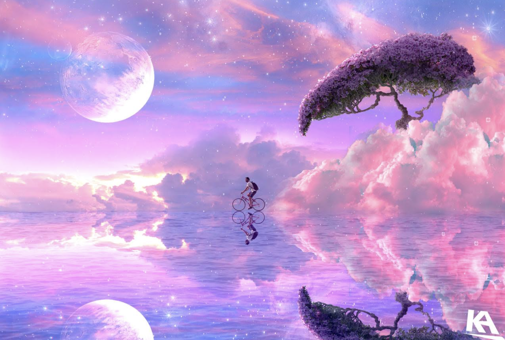
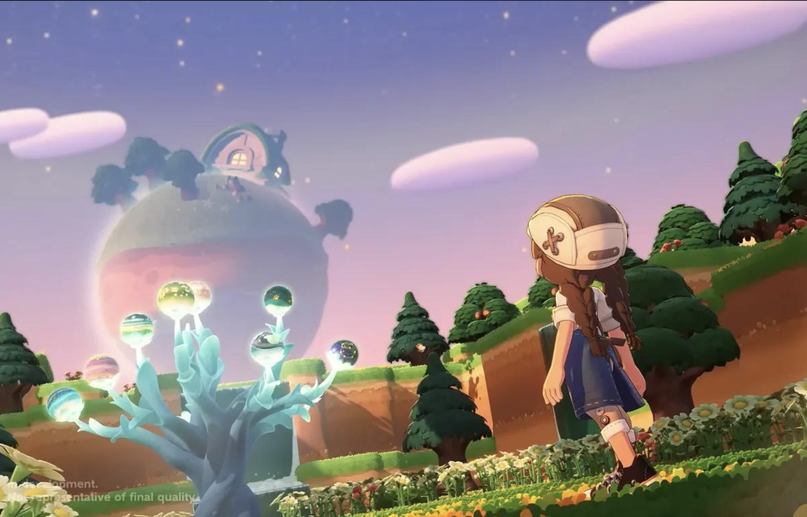
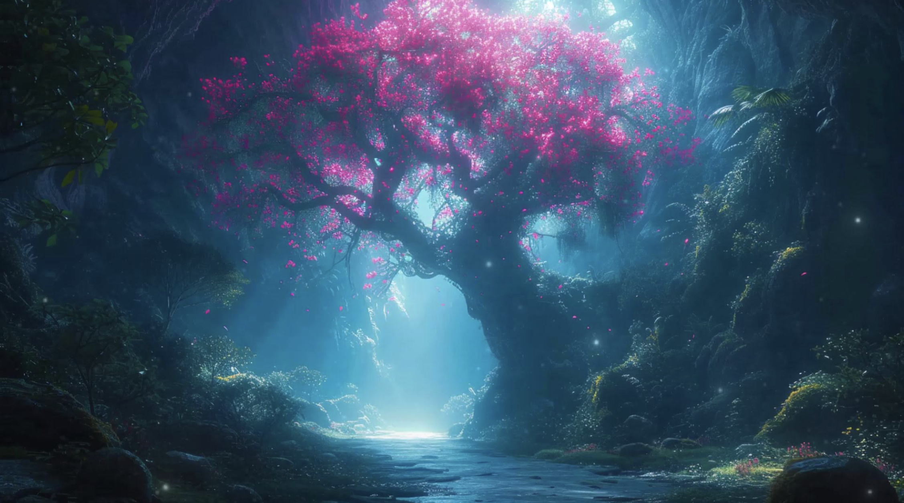
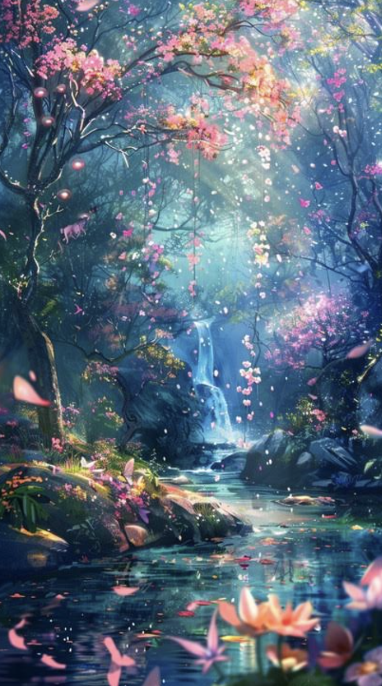
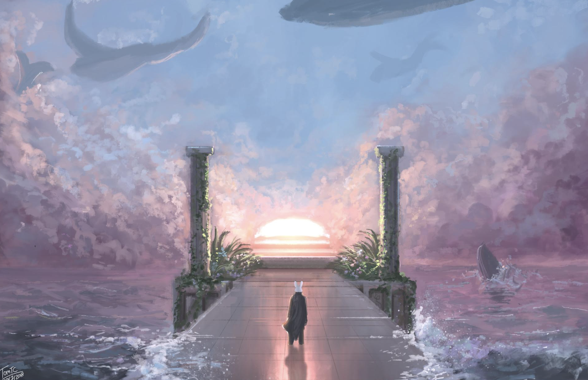
Reference images are shown as a student-supplied inspiration mood board. Original source links and creator credits are still needed. The concept art and storyboard above are new SVG illustrations made for this proposal.
#202B48#A9A2D8#EFB8D4#A7DED7#FFE8ABGeorgia gives the title a storybook voice; a system sans serif keeps controls and body text clear. Use a small, fixed fragment counter, text labels with icons, and generous buttons. Gold plus a star shape distinguishes collectibles without relying on color alone.
Rounded 2D silhouettes and layered gradients keep the art achievable. Whales drift slowly; flowers unfold after collection. No flashes or screen shake. Reduced motion replaces drifting and pulsing with still poses and clear outlines.
A quiet, sustained ambience supports exploration. A soft bell confirms a fragment, a rising three-note phrase marks a portal, and a gentle chord marks awakening. Silence between rewards leaves room for attention. Audio starts only after opting in; all feedback also appears visually.
Try a soft fragment cue. This synthesized sketch is a direction for testing, not final game audio.
Sound is off until you choose to play it.
Sound research reference: in a creator interview with Jakub Dvorský, he describes audio and visuals as jointly shaping atmosphere and discusses balancing a living soundscape with the actions a player needs to notice. Application here: keep reward cues audible but restrained. No audio from Amanita Design is included.
One compact landscape, five authored discoveries, one reusable dream room, and a clear transformation at the end. Target: a short, complete browser experience.
Done when: A player can complete the journey from 0 / 5 to 5 / 5 and restart without getting stuck.
Done when: Testers can identify the goal and complete all three stages; confusing or startling moments have been revised and retested.
HTML, CSS, JavaScript; simple 2D art; mouse/touch plus keyboard alternatives; no account or installation required.
Upward star rain, a temporary second moon, and the ocean-color effect. Add these only after the complete journey is reliable.
Random events can hide progress. Use a small authored event pool, a maximum wait, persistent clues, and replayable discoveries.
The proposal follows the seven content requirements in the professor’s Week 1 interactive lesson, including the dynamically displayed requirements in Section 07.
This proposal is part of Lana Harkin’s class portfolio. Gameplay observations, the final personal reflection, and original image credits will be added in a later update. Publication does not mean the assignment has been submitted to Canvas.